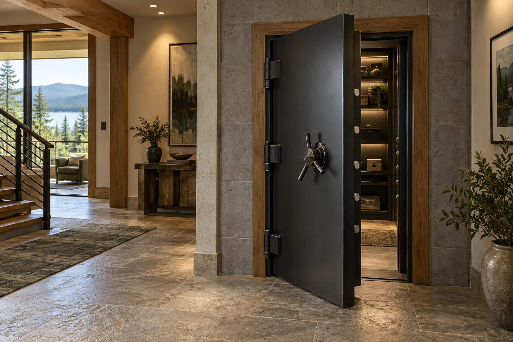

Opening & wall fit
We check the opening dimensions, wall thickness, frame requirements, and finished floor level against the selected door’s specifications.
We supply and install vault doors, bringing selection, delivery planning, and installation together. Start with your room, your opening, and the way you want the door to work.

Selection & supply
We source vault doors through Safe & Vault Store. We help review options against your opening, wall construction, access route, and installation needs before the order is settled.
We check the opening dimensions, wall thickness, frame requirements, and finished floor level against the selected door’s specifications.
Hinge side, swing direction, handle clearance, threshold, and space inside the room all affect how the door feels to use.
Door weight, the route into the home, and preparation at the opening shape the delivery and installation plan.
We connect the product details with the work at your home, so your door and installation can be considered together.
Choosing your door
If you have found a door you like, send the product link. If you are still exploring, tell us about your space and we can help narrow the practical choices.
Before the order
It is best to review the exact door requirements before the opening is built. If your opening already exists, share its measurements and wall construction so we can assess the fit.
Share the make, model, installation documents, and delivery status. We can review the door and your site before confirming the installation scope.
Use the current manufacturer documentation for the exact model. Ratings and features vary, and a door’s stated rating does not automatically describe the surrounding room.
Share a door you are considering or tell us about the room. We will start with the dimensions and details that matter.